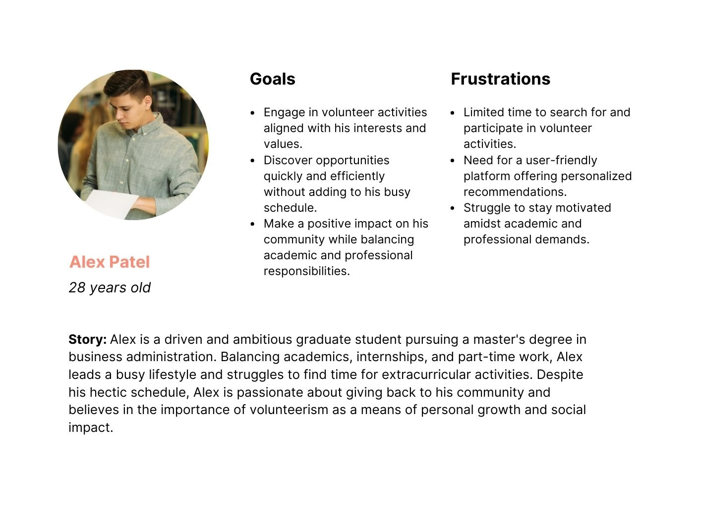

Empowering young individuals to discover and engage in meaningful volunteer
opportunities through a user-friendly matching interface. This platform streamlines volunteer
discovery, providing personalised recommendations and a gamified approach.
Skip ahead to the product!
Team
Nishtha Das
Role
UI/UX design
Technology
Figma, Adobe Photoshop
Timeframe
2022, revised 2024
OVERVIEW
One of the most pressing issues in the social sector is the absence of a steady stream
of volunteers. This is usually attributed to two reasons: the first is not having access to information
on open volunteer opportunities. The second reason is low motivation or incentive to engage in community
service. Together, these present significant barriers to social engagement and responsibility.
While many applications attempt to alleviate this issue by providing lists or databases of open jobs,
they usually highlight well-known organisations and initiatives. This makes it challenging for potential
volunteers to discover lesser-known, diverse opportunities that align with their interests and
preferences. Consequently, many young individuals miss out on meaningful volunteer experiences that
could contribute to personal growth and community impact.
RESEARCH
Since volunteering experience is often encouraged or even mandated in secondary and
further education, the target audience for this project was teenagers and young adults. All research and
design choices were made to suit this user segment.
Summary
I conducted interviews with 7 young individuals across different phases of their
academic trajectory, starting from 6th grade right up to the graduate level. Insights from these
interviews attested to the aforementioned struggle in finding suitable volunteer
opportunities. Participants expressed frustration with the lack of user-friendly platforms and
difficulty aligning jobs with their
interests. Through targeted questions, I explored the nature of their past volunteer experiences,
preferred discovery methods, and motivators for engaging in volunteerism. These insights underscored the
need for a streamlined approach to matching volunteers with organisation, emphasising user-friendliness
and enjoyment.
Pain points
User personas

IDEATION
Success criteria
Based on the two user personas, Maya and Alex, I finalised a set of features that the
application needed to have in order to cater to a wide range of young users.
The following were the success criteria features:
Preference filters:
The application should offer the ability to narrow down opportunities based on users' interests
and availability.
User-friendly interface:
A simple and intuitive interface ensures ease of navigation for users of all ages and
tech-literacy levels.
Gamification/motivation:
Incorporating features like progress tracking and achievements helps keep users engaged and
motivated in their volunteer efforts.
Wireframes
IMPLEMENTATION
The final application design smoothly connects user preferences with volunteer opportunities, offering
an interface interface on mobile devices. Users easily navigate the platform to
find opportunities tailored to their interests, skills, and availability. Preference and availability
filters
make volunteer matching efficient, while an overall score and progress tracking keep users engaged.
Design system
The design system features a custom logo and bright colors aimed at expressing
energy and enjoyment. These elements, dissimilar to those on alternate applications, seek to rebrand
volunteering as an exciting, self-motivated
journey, encouraging users to stay engaged throughout their experiences.
High fidelity prototype
NEXT STEPS
If given a chance to revise or build upon my work, I would focus on the following:
Interaction with organisations:
While this work is heavily informed by the perspectives and requirements of students who
would
use it, it does not equivalently cater to the potential needs of organisations offering
volunteering opportunities.
Further gamification:
The design can benefit from more gamification and in-built motivation measures. The overall
volunteering score can have a real-world mapping to encourage more activity.
Bandwidth filters: For especially
busy or tired users who still want to contribute, the design could include a bandwidth filtering
option
that categorises
jobs
by level of effort or energy.
TAKEAWAYS
This was one of my first experiences in UI/UX research and design. Hence, this let me
apply theoretical knowledge from coursework to a field I am passionate about. I gained
proficiency in adapting research methods for a wide range of user age groups (11 - 28 years
old). I also enjoyed delving into the psychological face of design by prioritising motivational
factors. Lastly, I strengthened my grasp of industry-level deliverables through a dedicated
design system and components.